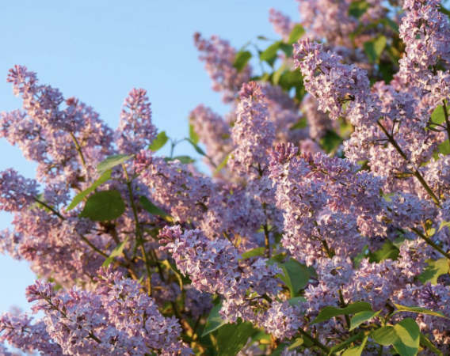
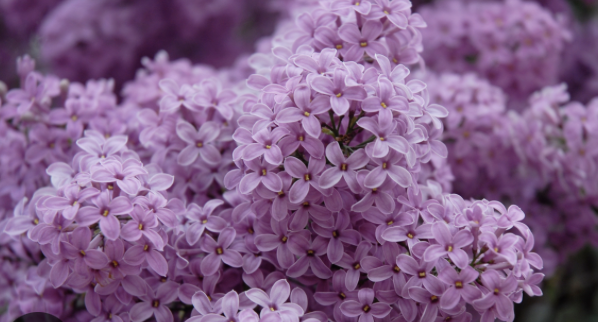

lilacs are comenly purple flowers with long stems. they grow in clusters that each have many flowers in each cluster. they are one of the prettiest flowers and definatley are onev of my favorites.


they are found in cold climates vprimaraly in europe, north america, and asia.
they symbolize first love, inocence and the start of spring.
homepage